Вход в электронное обучение
Вход через логин и пароль
Ввод логина и пароля
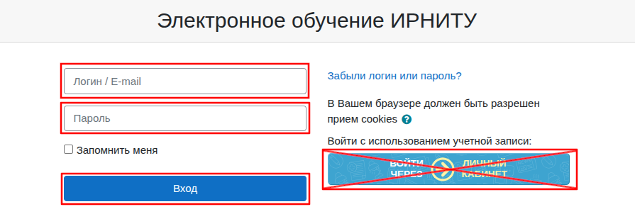
На сайте Электронного обучения:
- В поле «Логин / E-mail» необходимо ввести свой логин.
- В поле «Пароль» необходимо ввести пароль, который вы установили для входа на сайт Электронного обучения.
После заполнения полей нажмите «Вход»
Забыли пароль?
Если вы не помните данные для входа, воспользуйтесь формой восстановления:
Полезные ссылки и поддержка
Техническая поддержка: support.el@ex.istu.edu, ауд. Б-112, тел. 40-56-16
Вход через личный кабинет
Вход через личный кабинет
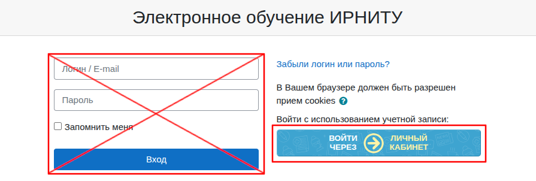
После того как Вы нажали кнопку «Войти через личный кабинет» Вас перенаправит на форму сайта app.istu.edu
На странице входа введите данные:
- В поле «Логин» необходимо ввести свой корпоративный логин.
- В поле «Пароль» необходимо ввести пароль, который вы установили для входа на сайт Личный кабинет.
Забыли пароль?
Если вы не помните данные для входа, воспользуйтесь формой восстановления:
Полезные ссылки и поддержка
Техническая поддержка: ais_support@ex.istu.edu, ауд. В-200, тел. 40-50-12
Организация работы в ЭОР
Создание тестов
Добавление теста
На странице курса нажмите «Режим редактирования».

Нажмите на «Добавить элемент или ресурс» в необходимом разделе курса.
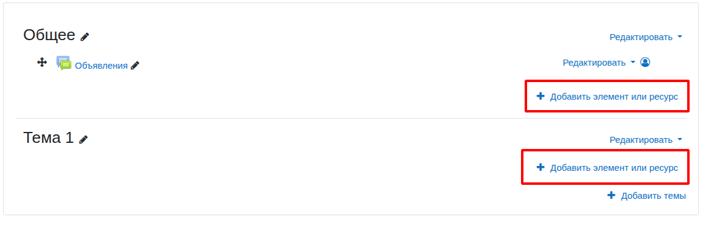
В открывшемся окне выберите элемент Тест.
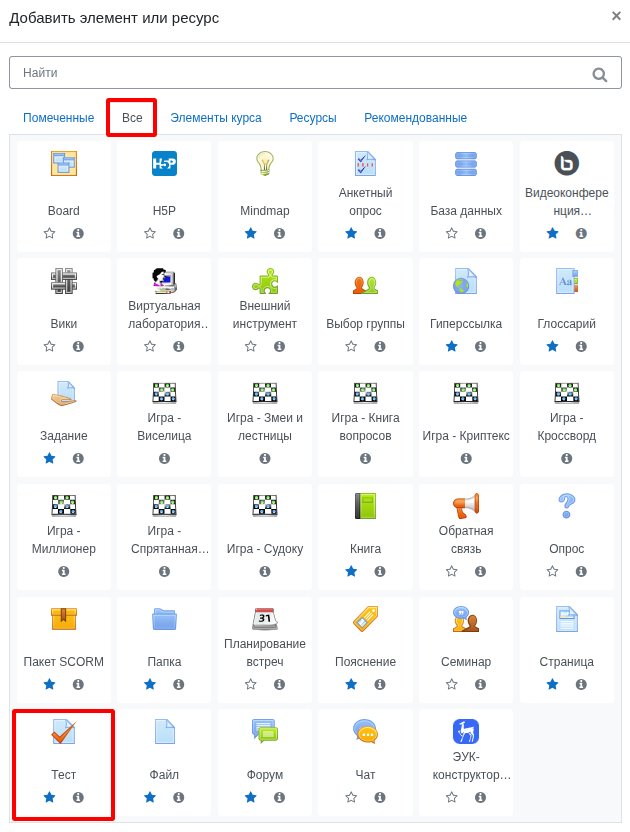
Настройки теста
Общее: заполните обязательное поле «Название».
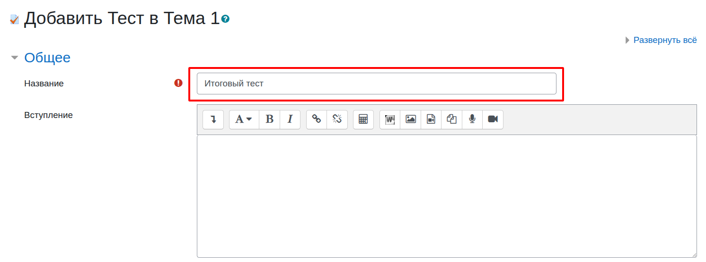
При необходимости установите сроки: начала и окончания тестирования, ограничение времени.
Рекомендуется выбрать «При истечении времени» - «Открытые попытки отправляются автоматически».
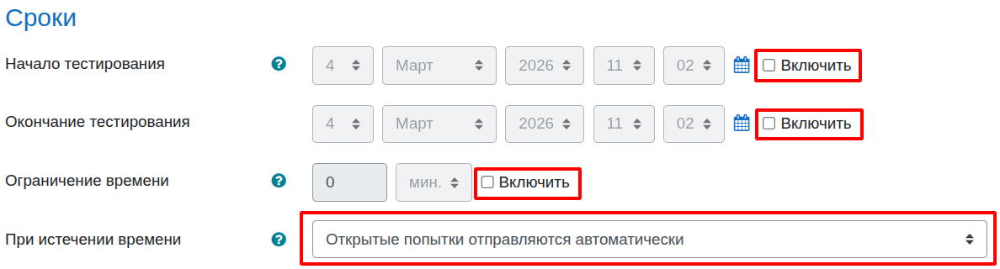
- Если Вы не установили ограничение по времени проведения теста, он будет продолжаться до того времени, пока студент самостоятельно его не завершит;
- Если Вы не установили время открытия и закрытия тестирования, оно будет доступно в любое время;
- Если Вы не установили время открытия или закрытия, тестирование будет недоступно до наступления установленного времени либо будет доступно до наступления установленного времени.
Оценка: настройте параметры оценивания. Если разрешено несколько попыток, выберите метод оценивания.
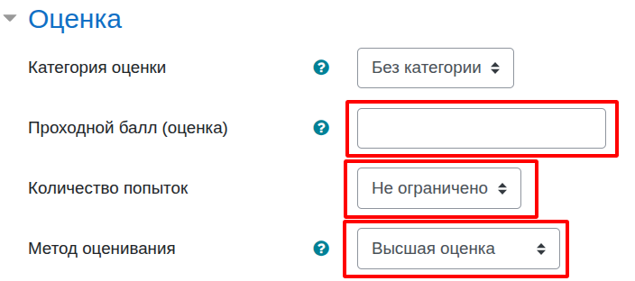
Расположение: настройте параметры расположения вопросов в тесте.
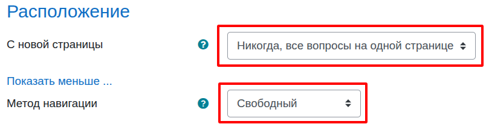
- Никогда, все вопросы на одной странице означает, что все вопросы в тесте будут располагаться на одной странице;
- Каждые n вопр. означает разделение по указанному числу вопросов на одну страницу теста.
- Свободный - Переход к любому вопросу в тесте без ограничений;
- Последовательный - переход к каждому вопросу по порядку без возможности вернуться к предыдущему или перейти к следующему более чем на один вопрос.
Настройки просмотра в данном разделе показано то, что студент может видеть во время или после прохождения теста. Преподаватель может ограничить или расширить возможности просмотра поставив или убрав галочку на против того или иного действия.
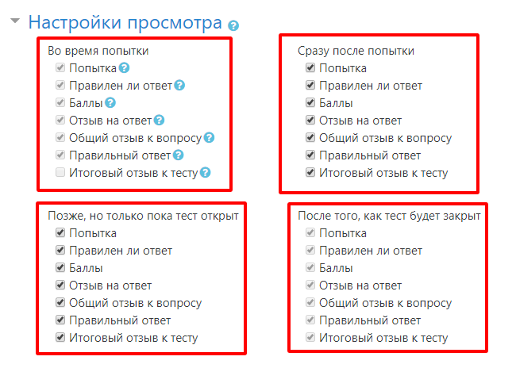
- Попытка - Может ли вообще студент просматривать попытку тестирования;
- Правилен ли ответ - может ли студент видеть, правильно он ответил на вопрос или нет (в случае, если включен просмотр попытки);
- Баллы - отображение балла за каждый вопрос;
- Отзыв на ответ - отображение отзыва в зависимости от ответа студента;
- Общий отзыв к вопросу - отображение общего отзыва к вопросу (какая-либо информация);
- Правильный ответ - может ли студент видеть, верный ответ на вопрос;
- Итоговый отзыв к тесту - отображение отзыва к тесту, основанный на результате студента (устанавливается преподавателем).
Создание банка тестовых вопросов
В разделе «Управление курсом» блока «Настройки» выберите «Банк вопросов».
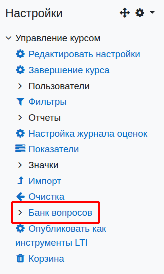
Для удобного взаимодействия с банком вопросов рекомендуется создавать отдельные категории внутри банка вопросов
Чтобы создать категории в банке вопросов, перейдите в раздел «Категории» и внизу страницы заполните название новой категории и нажмите «Добавить категорию».
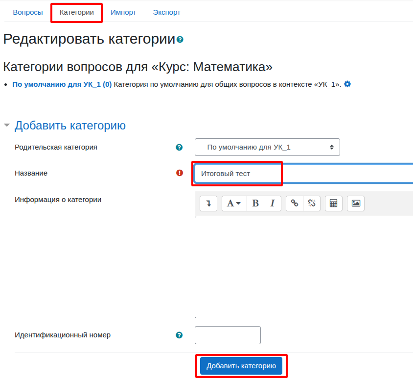
После создания категории под вопросы перейдите в неё, нажав на её название в списке категорий.
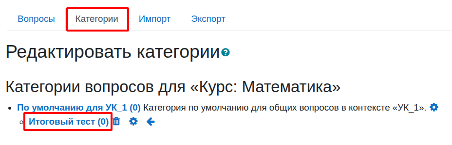
Внутри категории можно приступать к созданию вопросов. Нажмите Создать новый вопрос для добавления нового вопроса.
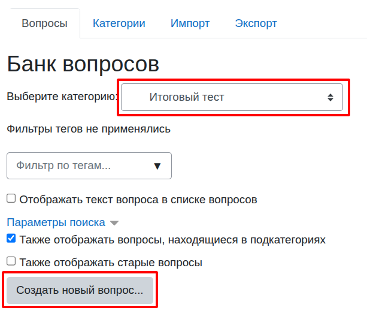
Создание нового вопроса
На форме с выбором типа вопроса выберите необходимый.
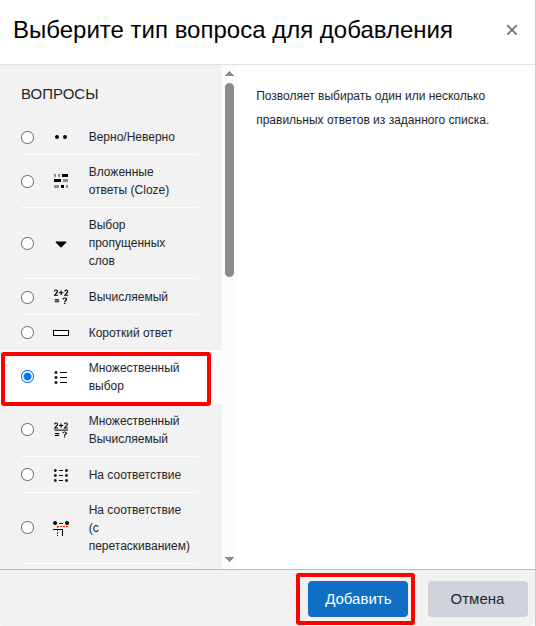
-
Часто используемые типы вопросов:
- Множественный выбор — выбор одного или нескольких ответов из предложенных
- Верно/Неверно — выбор между двумя вариантами
- На соответствие — сопоставление элементов двух групп
- Короткие ответы — ввод слова или короткой фразы
- Числовой — числовой ответ с допустимой погрешностью
- Вычисляемый — вычисление по формуле со случайными значениями
- Эссе — развёрнутый ответ студента
Поля формы вопроса
Рассмотрим создание нового вопроса на примере множественного выбора
- Категория — категория вопроса
- Название вопроса — для ориентирования в списке (видит только преподаватель)
- Текст вопроса — формулировка вопроса (можно форматировать, добавлять изображения)
- Балл по умолчанию — количество баллов за правильный ответ (по умолчанию 1)
- Общий отзыв к вопросу — текст, который увидит студент после ответа
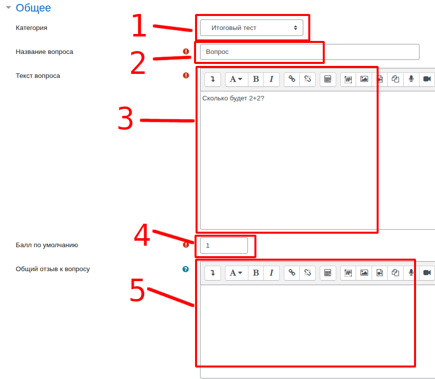
Один или несколько ответов?
- Только один ответ — студент выбирает один вариант (переключатель)
- Допускается несколько ответов — студент может выбрать несколько вариантов (флажки)
Случайный порядок ответов — перемешивание ответов при каждой попытке.
Нумеровать варианты ответов — выбор типа нумерации (буквы, цифры).
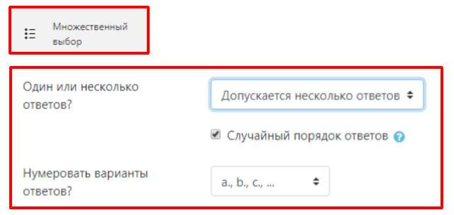
Далее необходимо заполнить варианты ответов и расставить вес каждого ответа в соответствии с ранее выставленной настройкой Один или несколько ответов
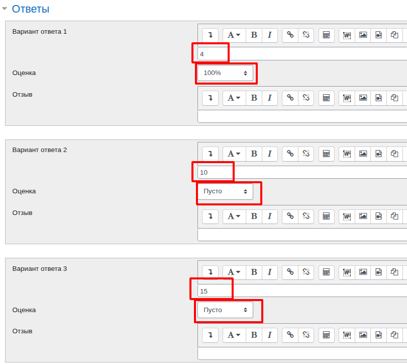
Добавление вопросов в тест
Перейдите в курс, выберите созданный тест. Далее нажмите «Редактировать тест», для того чтобы добавить вопросы в тестирование.
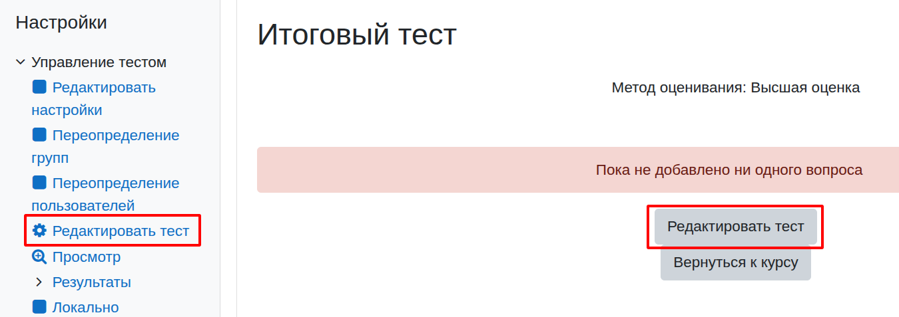
Введите «Максимальная оценка» и нажмите «Сохранить».
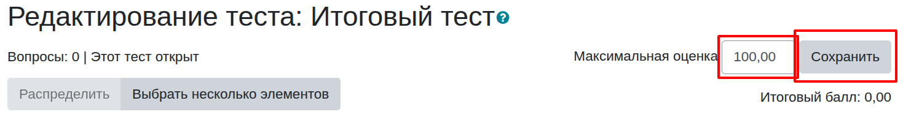
Нажмите «Добавить» и выберите:
- Из банка вопросов — выберите нужные вопросы из списка
- Случайный вопрос — задайте количество случайных вопросов
- Новый вопрос — создайте новый вопрос
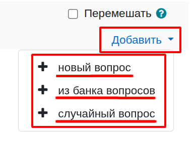
Из банка вопросов - открывается список всех вопросов и из них необходимо выбрать нужные, поставив напротив галочку в квадратике.
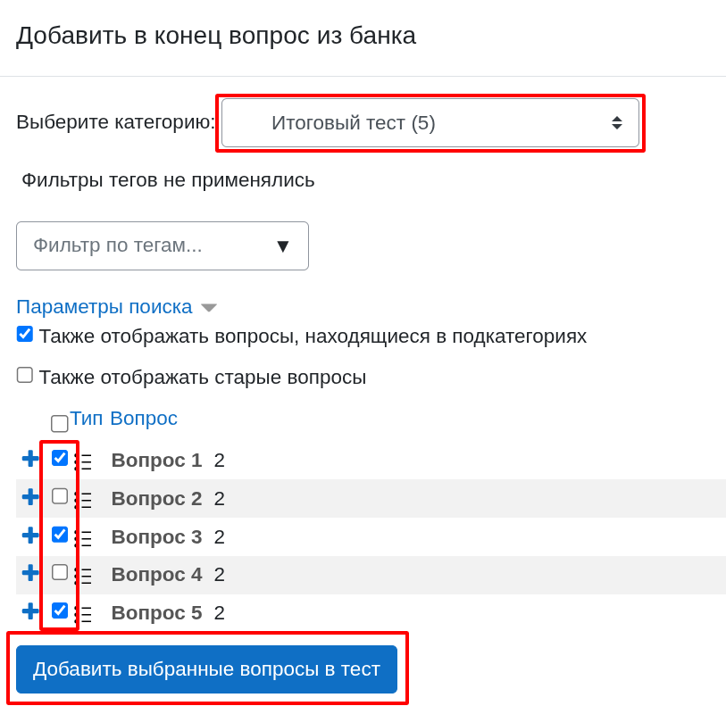
Случайный вопрос - в этом разделе можно задать нужное количество вопросов, которое вы хотите добавить в тест. При этом вопросы будут выбраны случайным образом.
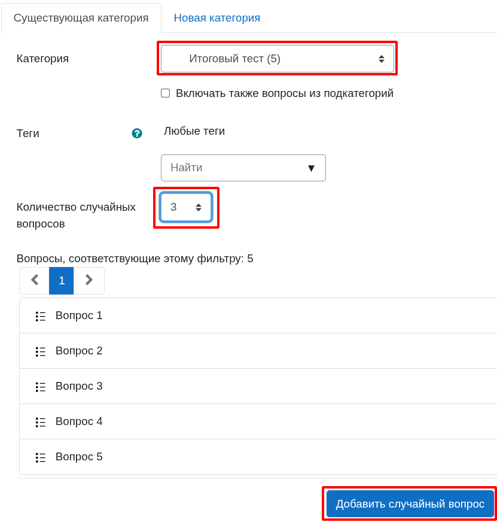
Завершение создания теста
1 – нажав на карандаш, можно изменить количество баллов за вопрос.
2 – можно добавить дополнительный вопрос. Либо добавить вопросы из другой категории.
3 – этими кнопочками можно поменять очередность вопросов и объединить их, поместив на одной странице.
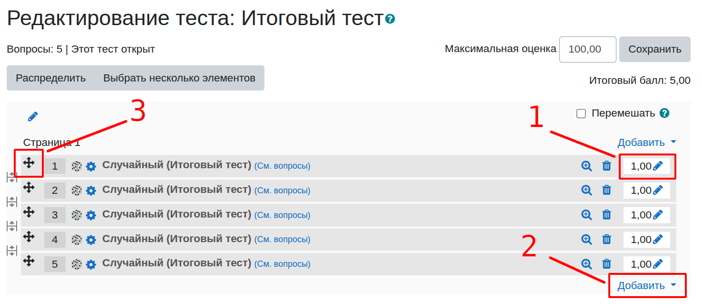
Тест создан! Теперь студенты могут проходить тестирование.
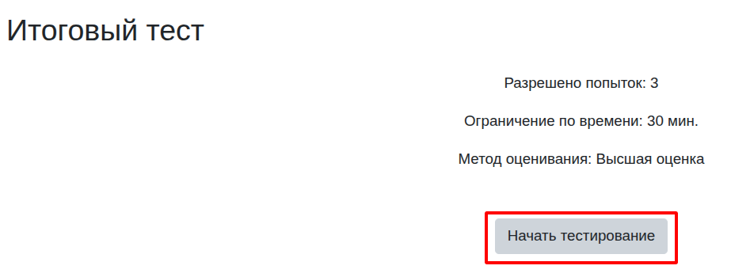
Добавление файла
Добавление файла
На странице курса нажмите «Режим редактирования».

Нажмите «Добавить элемент или ресурс» в одном из разделов курса.

В открывшемся окне выберите элемент Файл.
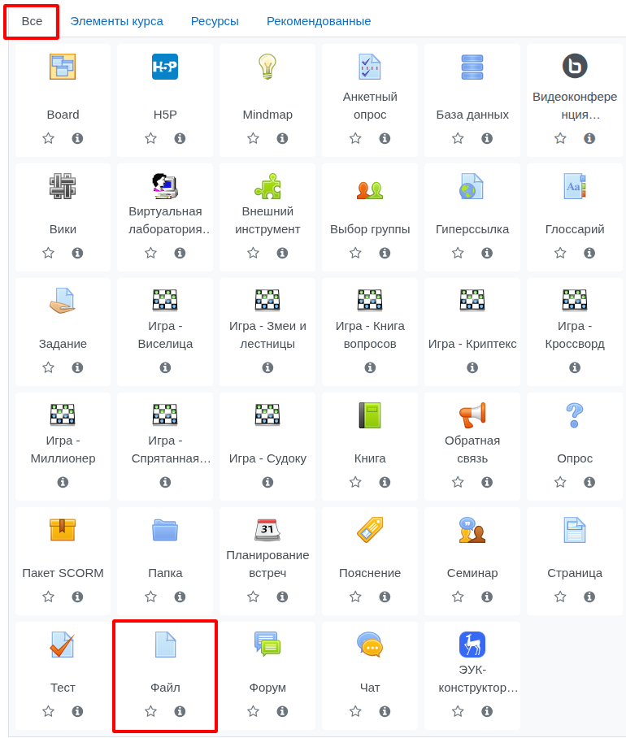
Настройки файла
Общее: заполните обязательное поле «Название» и при необходимости «Описание».
Выбор файла: перетащите файл в область загрузки или нажмите «Добавить» для выбора из репозитория.
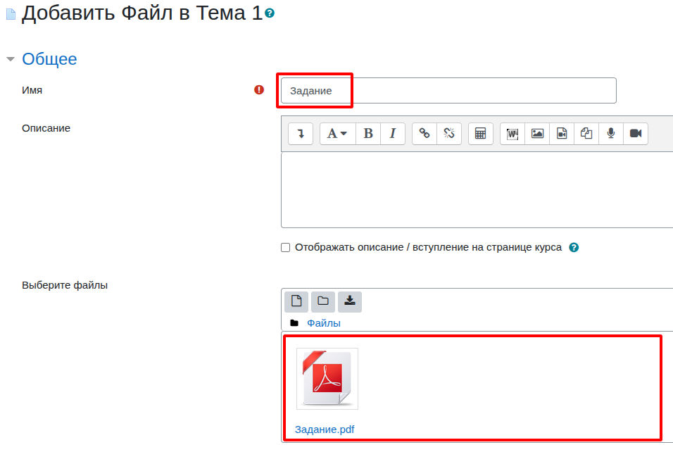
Параметры отображения
В разделе «Внешний вид» выберите способ отображения файла:
- Автоматически — Moodle определит оптимальный способ
- Встроить — файл откроется внутри курса (для PDF, изображений)
- Открыть — файл откроется в новом окне
- Скачать — файл будет автоматически скачан
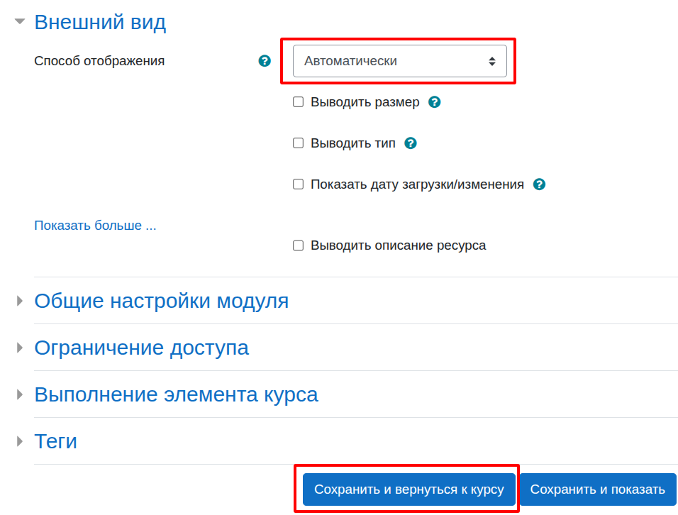
Нажмите «Сохранить и вернуться к курсу».
Файл добавлен! Студенты могут просматривать или скачивать ресурс.
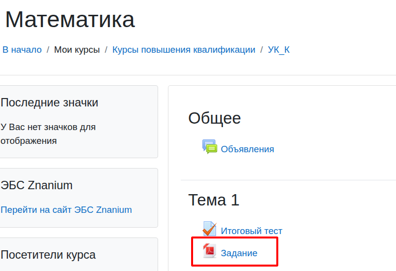
Добавление чата
Добавление файла
На странице курса нажмите «Режим редактирования».

Нажмите «Добавить элемент или ресурс» в одном из разделов курса.

В открывшемся окне выберите элемент Чат.
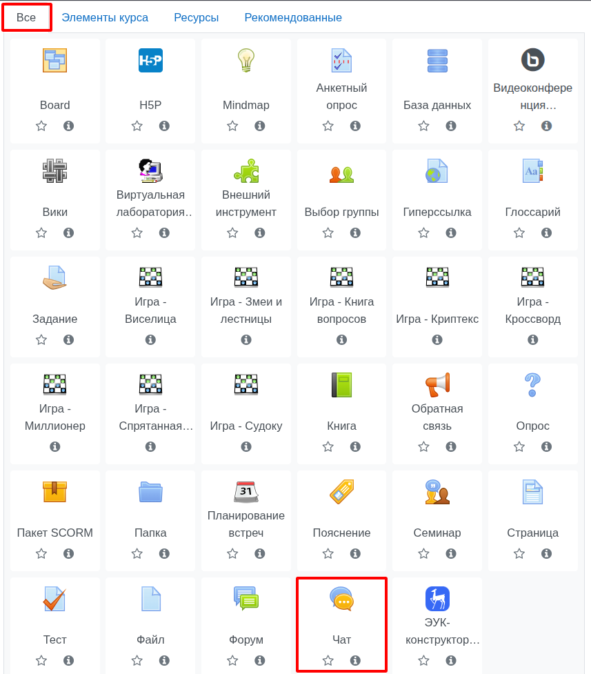
Заполнение полей настройки
В появившемся окне заполните необходимые поля:
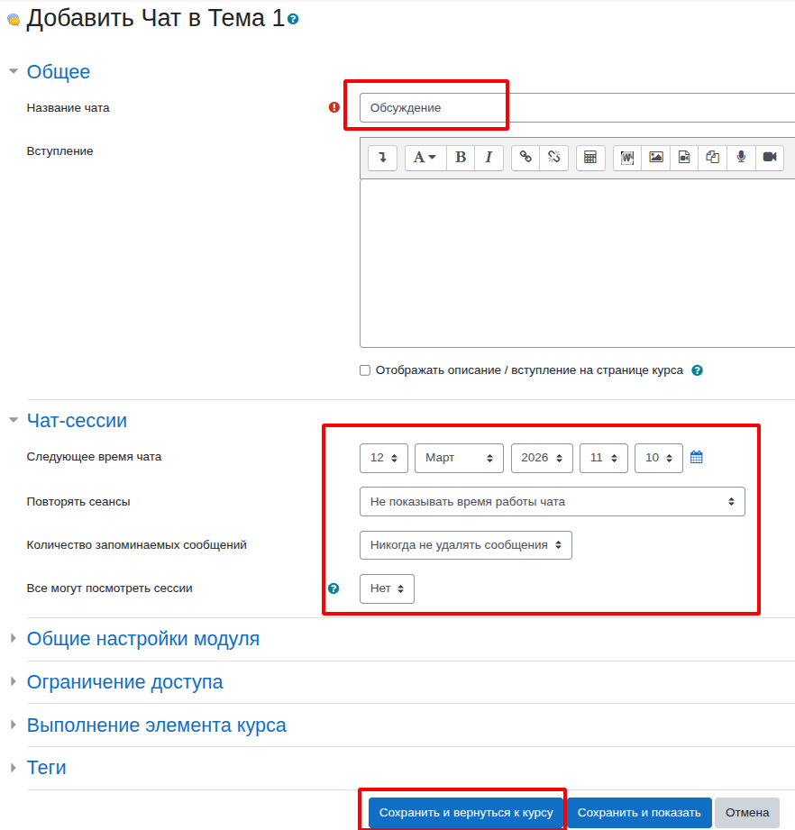
- Название чата — заголовок, видимый участникам
- Вступление — инструкция по использованию чата (поддерживает форматирование и изображения)
- Следующее время чата — дата и время проведения сессии
- Повторять сеансы — периодичность появления чата в календаре
- Количество запоминаемых сообщений — срок хранения истории переписки
- Все могут посмотреть сессии — разрешение студентам на просмотр прошлых чат-сессий
После заполнения всех полей нажмите «Сохранить».
⚠️ Сессия не сохранится, если в ней не участвовали минимум 2 человека в течение 5 минутЗапуск чата
Для работы в чате нажмите на кнопку «Войти в чат».
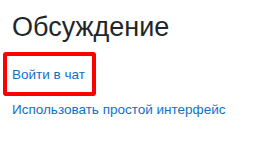
Использование чата
Во всплывающем окне откроется интерфейс чата:
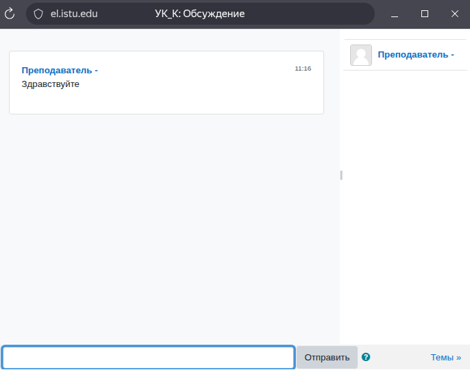
Напишите сообщение в текстовом поле внизу окна и нажмите Enter — сообщение будет отправлено всем участникам. Чат обновляется автоматически каждые 5 секунд.
💬 Чат предназначен для синхронного текстового общения в реальном времениДобавление опроса
Добавление опроса
Модуль опроса позволяет преподавателям создавать опрос, в том числе опрос с множественным выбором. Модуль «Опрос» позволяет преподавателю задать один-единственный вопрос и предложить широкий выбор возможных ответов. Результаты опроса могут быть опубликованы после ответов студентов, после определенной даты, или не показаны вообще. Результаты могут быть опубликованы с именами студентов или анонимно.
Опросы могут быть использованы:- в качестве быстрого голосования для выбора темы;
- для оценки курса;
- для содействия студенту в принятии решений. Например, позволить студентам голосовать о направлении курса.
На странице курса нажмите «Режим редактирования».
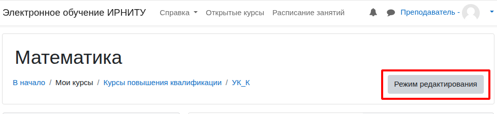
Нажмите «Добавить элемент или ресурс» в одном из разделов курса.

В открывшемся окне выберите элемент Опрос.
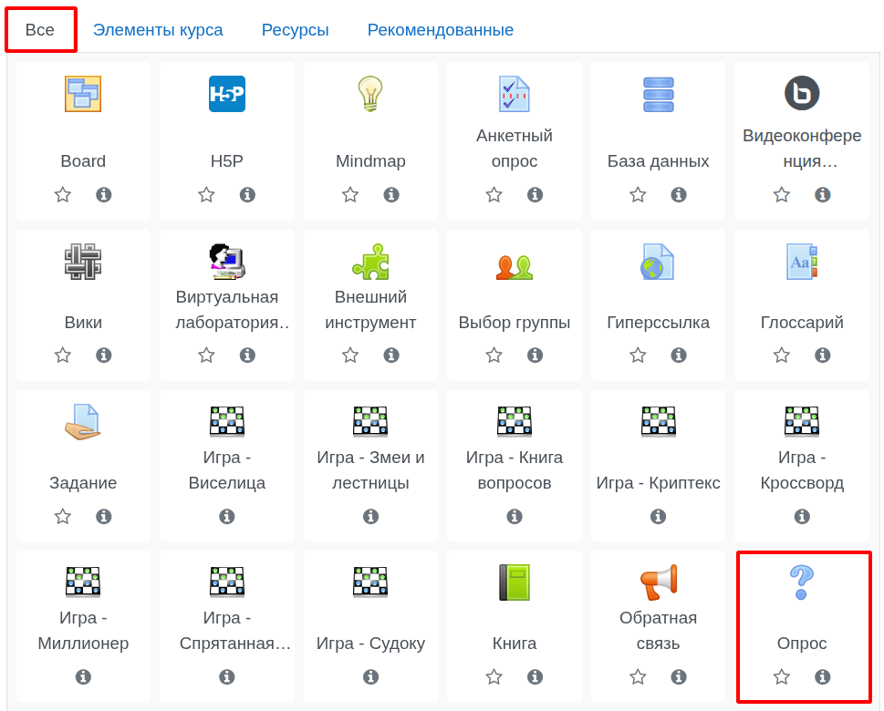
Настройка элемента
Заполните необходимые поля:
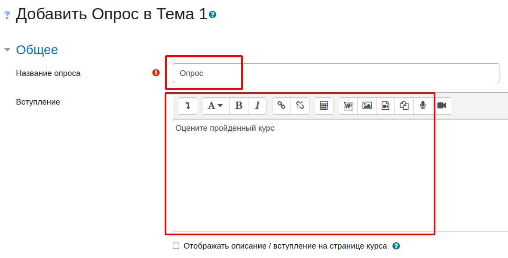
- Название опроса — заголовок, видимый участникам
- Вступление — инструкция по использованию опроса (поддерживает форматирование и изображения)
Добавление вопросов
Заполняем варианты ответов для опроса соответствующими значениями.
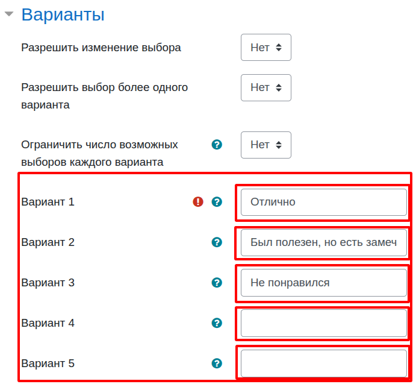
-
1. Разрешить изменение выбора
Если включено, студенты могут вернуться к опросу и поменять свой ответ. Если отключено — ответ будет окончательным.
-
2. Разрешить выбор более одного варианта
Эта настройка превращает опрос из голосования «за одного» в список «галочек». Студенты смогут отметить несколько пунктов одновременно.
-
3. Ограничить число возможных выборов каждого варианта
Полезно, когда ресурс ограничен (например, места на экскурсию). Вы устанавливаете лимит, и когда кто-то выбирает вариант, он «заканчивается». Последующие студенты уже не смогут его выбрать.
После заполнения всех полей нажмите «Сохранить и вернуться к курсу».
Демонстрация работы
В пользовательском варианте это будет выглядеть следующим образом:
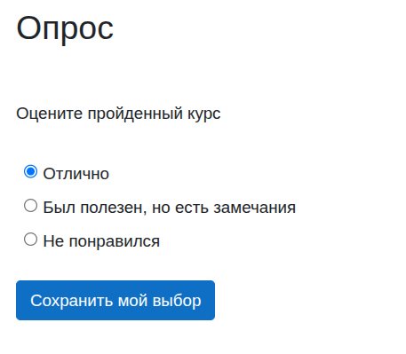
Добавление гиперссылки
Добавление гиперссылки
Данный тип ресурса является ссылкой на внешний интернет-сайт или файл. Модуль "гиперссылка" позволяет прподавателю предоставить web-ссылку. Все, что находится в свободном доступе в Интернете, документы или изображения, могут быть связаны с курсом гиперссылкой.
На странице курса нажмите «Режим редактирования».

Нажмите «Добавить элемент или ресурс» в одном из разделов курса.

В открывшемся окне выберите элемент Гиперссылка.
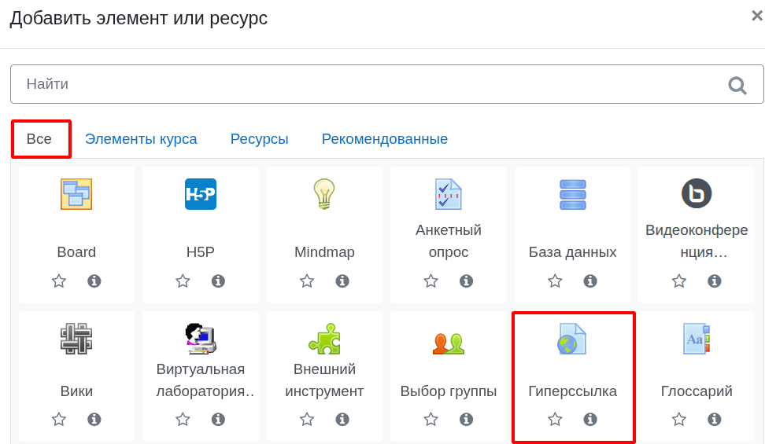
Настройка элемента
Заполните необходимые поля:
- Имя — заголовок, видимый участникам;
- Адрес (URL) — ссылка на Ваш источник.
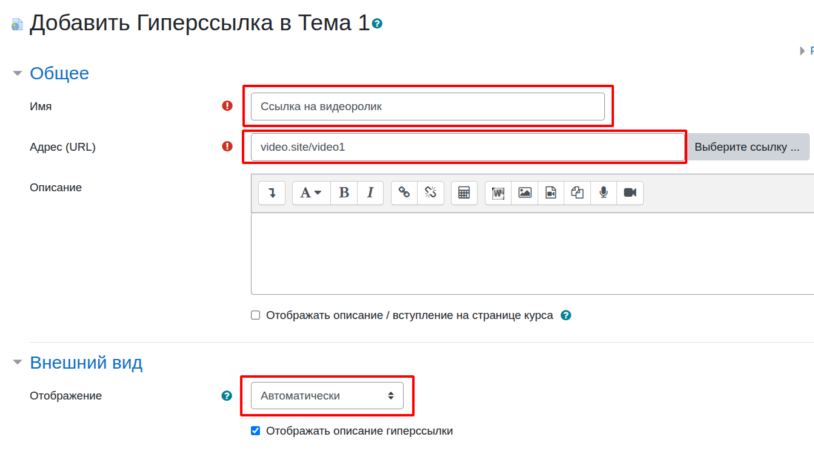
В разделе «Внешний вид» выберите способ отображения файла:
- Автоматически — Moodle определит оптимальный способ
- Внедрить — ссылка откроется внутри курса
- Открыть — ссылка откроется в новой вкладке
- Во всплывающем окне — ссылка откроется в новом окне
После заполнения всех полей нажмите «Сохранить и вернуться к курсу».
Демонстрация
В пользовательском варианте это будет выглядеть следующим образом:
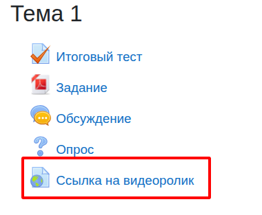
Зачисление пользователей на курс
Зачисление студентов на курс по группам
Для зачисления группы на главной странице курса, в блоке «Настройки» выберите «Пользователи» → «Способы зачисления на курс».
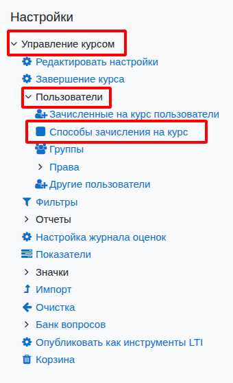
Затем в раскрывающемся списке «Добавить способ» выберите «Зачислить группу (все специальности)».
Далее укажите необходимую группу и нажмите «Добавить способ».
Все студенты выбранной группы будут зачислены на ваш курс и увидят его на главной странице сайта.
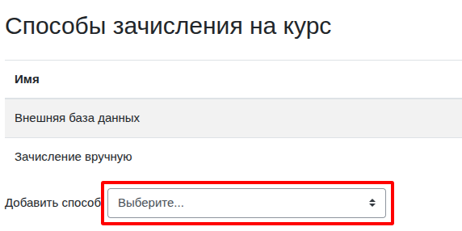
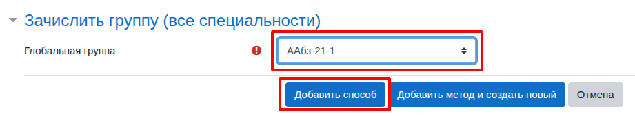
Индивидуальное зачисление
На главной странице курса, в блоке «Настройки» нажмите «Пользователи» → «Зачисленные на курс пользователи».
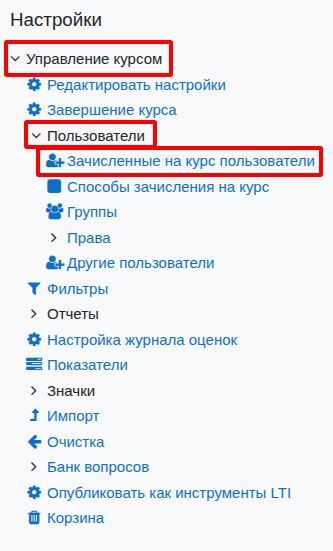
В правом верхнем углу страницы Участники нажмите Зачисление пользователей на курс
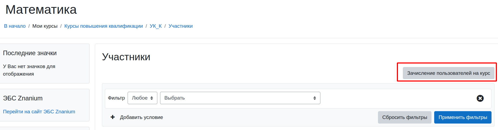
На следующем окне в поле Выберите пользователей введите либо фамилию, либо имя, отчество, либо сначала имя, отчество, а потом фамилию (например, для тех случаев, когда слишком много пользователей с одинаковыми именами). Другие комбинации не будут найдены.
Затем нажмите на необходимого пользователя(-ей), чтобы он закрепился полем выше.
После этого нажмите «Зачислить выбранных пользователей и глобальные группы».
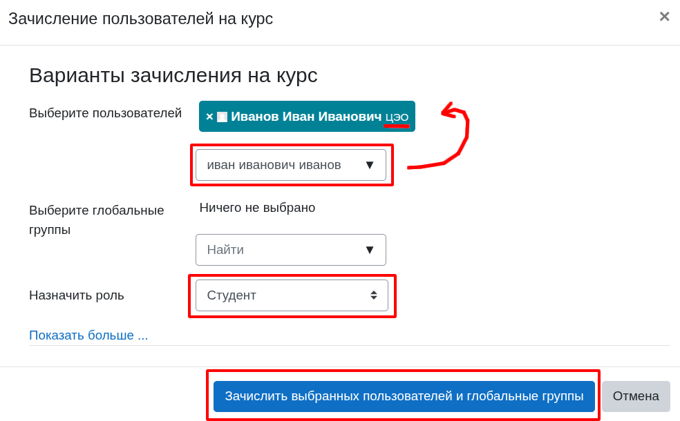
Самостоятельная запись на курс
Для зачисления группы на главной странице курса, в блоке «Настройки» выберите «Пользователи» → «Способы зачисления на курс».
Затем в раскрывающемся списке «Добавить способ» выберите «Самостоятельная запись».
Обязательно введите Название способа и кодовое слово (его не нужно никому сообщать), оно требуется для работы данного способа записи. В поле «Использовать кодовые слова для групп» отметьте «Да». Нажмите «Добавить способ».
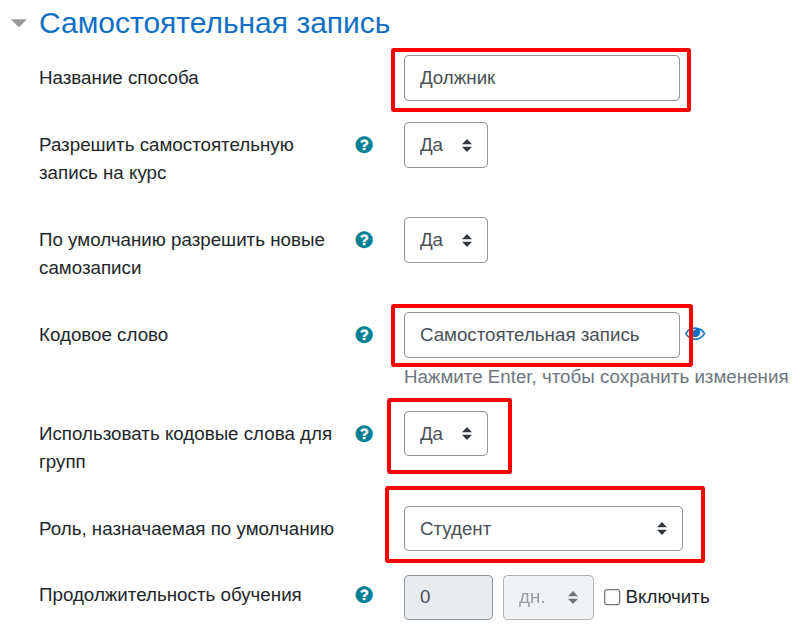
В блоке «Настройки» выберите «Управление курсом» → «Пользователи» → «Группы».
Подобных групп можно создать неограниченное количество, главное чтобы кодовые слова были уникальными.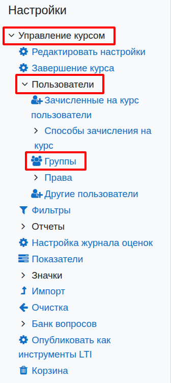
Нажмите «Создать группу», введите название группы и кодовое слово (его нужно будет сообщить студентам), щелкните «Сохранить».
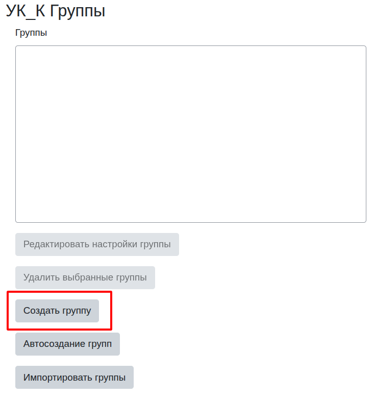
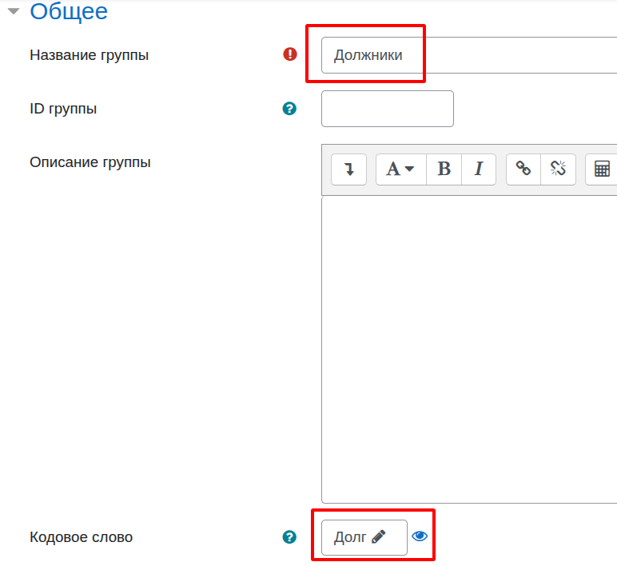
Демонстрация
Студент одним из доступных ему способов находит курс, на который ему необходимо зачислиться (например, для сдачи долга).
Далее указывает кодовое слово (установленное для группы), нажимает Записаться на курс, и автоматически студент будет зачислен в нужную группу на курсе.